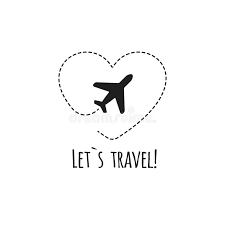

Un voyage est un déplacement dans l'espace,
contraint, effectué vers un point plus ou moins éloigné dans un
but personnel ou professionnel ou autre, déplacements
motivés par des activités sportives ou socio-culturelles
ou de grands événements.
Quel est le but d'un voyage ?

Voyager, c'est se découvrir soi-même. ...
En voyageant, on apprend à se passer du superflu. ...
Vivre des expériences fortes, c'est bon pour la confiance en soi !
S'ouvrir aux autres et au monde, c'est un des bienfaits du voyage. ...
Créer des souvenirs heureux qui nous aident dans les mauvais moments.
Quels sont les types de voyages ?
On peut voyager à cheval
à pied
en voiture
en bateau
On voyage de jour
ou de nuit, avec ou sans argent. On voyage seul, en famille, en groupe.